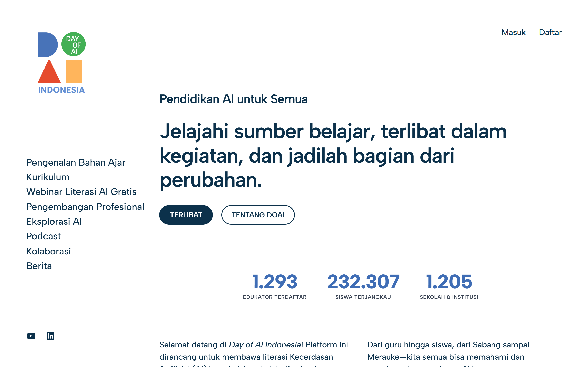

01
Day of AI
Indonesia
Program Manager · 2025 — Now
A national AI-literacy platform for Indonesian schools, PAUD through SMK, free to use. I helped build the site. I also run the partnerships that get the curriculum into actual classrooms, and I deliver the workshops myself, including the creativity module for ages 5 to 10.
232,307Students reached
1,205Schools
1,293Educators
